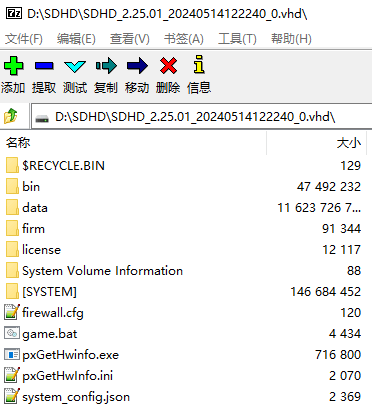
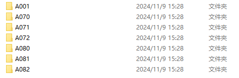

本站目前暂不提供CHUNITHM游戏本体相关的公开下载链接，如需获取游戏下载，请至相关群内查看。
重要提醒
首先请仔细阅读教程的每一个字，出现问题请确认你是否认详细阅读了教程的每一步。
出现问题之后请阅读另外一篇常见问题尝试解决其中你遇到的问题。
如果你的问题在常见问题之外，再在群以及社区中寻求帮助！
提问的时候请一同发布你的游戏界面，Log或设置截图以及文字详细描述你出现的问题，只扔个图问这是怎么回事这种问题是无法帮你解答的！！
游玩前的准备以及注意事项
游戏不可放置在E:\与Y:\，请将游戏文件放置在其他硬盘分区
首先请至下载链接中下载如下文件。

安装Runtime (Windows运行时安装包)

提取游戏文件
使用Windows挂载虚拟磁盘方式提取HDD
鼠标左键双击SDHD_2.25.01_20240514122240_0.vhd
Windows会挂载一个新的硬盘分区(具体盘符根据每个人情况不同而不同)
进入这个磁盘分区，将其中的所有文件复制出来（例如：C:\SDHD\）
提取完文件后可以关闭磁盘分区窗口，并在这个分区上点击鼠标右键选择弹出(Eject)卸载磁盘分区
你也可以挂载虚拟磁盘后直接在其中运行HDD，配置方法与提取出来并无区别
使用7-Zip提取HDD
下载7-Zip安装包
解压并安装7-Zip
解压ExFat7z.rar，在7-Zip安装目录中新建一个Formats文件夹，将解压的两个dll文件复制进去
配置好7-Zip后在SDHD_2.25.01_20240514122240_0.vhd上点击鼠标右键，选择打开方式→7zip文件管理器或点击右键→7zip→打开压缩包，如下图：

提取后获得如下文件：

安装ICF
解压amfs_2.27.zip
将amfs与appdata文件夹放置于任意磁盘的根目录，例如：x：\（x为任意盘符）
安装已解密的文件
将 chusanApp.exe 与 amdaemon.exe 放入HDD中的 bin 文件夹中并覆盖源文件
-
chusanApp.exeSHA-256：ad2dcc02ce52b3fff24a2919f8617854581dd2e2c0378ea13d84438fcca2d522 -
amdaemon.exeSHA-256：45017489c53ff65b38a7be5d4d5b1f869ecb13f206e6a95d6ce4f144fbbb87a4 -
如exe的SHA-256与上述不符，请重新至下载链接中下载以免下载遭到篡改的exe文件
注意事项
上述chusanApp.exe已打过可正常游玩所需的补丁
如有其他修改补丁的需求，请访问 EVIL LEAKER - Patcher页
-
打过补丁的
chusanApp.exe在保存时有可能会被误报为病毒，这是正常现象，请给exe文件添加到杀毒软件白名单 -
补丁站仅支持本教程提供之
chusanApp.exe的修改！
安装option
解压option(A001~A082).zip
将option文件夹复制到HDD文件夹下的bin文件夹中
-
CHUNITHM官方option文件夹都以
Axxx命名,x均为数字，如果你在其他地方下载到非下图所示的option文件夹则可能为玩家自制内容 -
正确的option路径应为
bin\option，option文件夹中的内容应为下图所示：

- 如option路径为
bin\option\option这样嵌套，则游戏不能正确读取option数据
关于官方option的命名规则
CHUNITHM 以半年为一个小版本更新，一年一次大版本更新，例如：LUMINOUS / LUMINOUS PLUS
官方option数据命名也以此作为区分：
-
A001 - 现行版本以A001作为游戏发布的首日(Day-1)更新
-
A071 - 现行版本以前两位作为更新月份，最后一位则为这个月份的第几个更新包，如最后一位是
0，则固定为待机广告视频更新包
安装segatools
配置segatools
由于segatools没有图形配置工具，因此您必须手动修改segatools.ini来进行配置，配置文件位于bin文件夹中
建议您使用支持语法高亮的文本编辑器(例如：Notepad++、VS Code、Sublime Text)来修改配置文件
注意事项
请不要使用富文本编辑器(例如：Word、WPS、写字板)来修改配置文件，可能会让配置文件格式错误而导致游戏读取配置文件出错
[vfs]
如果您已按照上面安装ICF步骤配置对应文件夹，请将对应文件夹的路径填写到[vfs]对应的选项中
amfs与appdata文件夹需要放置在任意磁盘分区的根目录，x代表任意盘符
[gpio]
注意事项
外网最新版segatools中[gpio]已重新命名为[system]，本文中以fufubot team版为准
- 如果您的显示器刷新率 ≥120Hz，请将
dipsw2与dipsw3设置为0：
- 如果您的显示器刷新率为60Hz，请将
dipsw2与dipsw3设置为1：
请严格按照上述要求修改dipsw设置，否则邮箱将无法正常启动！
[gfx]
- 如需全屏运行游戏请将
windowed修改为0
- 如需窗口运行游戏请将
windowed修改为1
-
无边框窗口请将
framed修改为0 -
有边框窗口请将
framed修改为1
注意事项
CHUNITHM以固定的1920x1080分辨率渲染游戏，不可更改
如果你的显示器分辨率大于1080P并且需要全屏窗口运行游戏，请将系统分辨率降低到1080P或使用全屏进行游戏
不管以何种方式运行游戏，monitor=0 都无需修改，请保持默认设置
[aime] / [aimeio]
如果你使用官方读卡器或支持官方协议的第三方读卡器，请将enable修改为0并正确配置读卡器端口号
如果你没有任何读卡器设备，请将enable修改为1以启动segatools模拟读卡器，Yubideck(大四台)修改为1
Yubideck(大四台)需要另外设置[aimeio]以启动手台上的读卡器请将;path=aimeio_yubideck.dll前的分号;删除
使用拥有自己专有io的第三方读卡器，需要将;path=aimeio.dll前的分号;删除，此处文件名请以读卡器作者提供的为准
[led]
如需使用LED板（837-15093）则enable修改为0，正常情况不需要修改默认为1即可
[io3]
io3中的选项负责映射TEST、SERVICE、COIN三个机台功能按键，默认为键盘字母上面的数字1、2、3
配置控制器io
本文仅展示TASOLLER、TASOLLER PLUS、Yubideck的io配置方法，手台控制器的连接方法请查看[连接控制器]
- 本章节依旧需要在
segatools.ini中进行配置
TASOLLER / TASOLLER PLUS
首先请将默认的chuniio-mux.dll注释掉，按照下方设置在path=chuniio-mux.dll前加上分号;
- 使用(旧)TSOLLER请删除
;path=tasoller.dll前的分号;取消注释状态
- 使用TASOLLER PLUS请删除
;path=tasoller_plus.dll前的分号;取消注释状态
Yubideck (大四控制器/舟台)
首先请将默认的chuniio-mux.dll注释掉，按照下方设置在path=chuniio-mux.dll前加上分号;
- 使用Yubideck(大四台)请删除
;path=yubideck.dll前的分号;取消注释状态
[zhousensor]为Yubideck(大四台)专用设置，默认即可，如需设置请按照segatools.ini中的说明进行设置
[zhousensor]
; YubiDeck Need this
; You can set YubiDesk side light color here, the value is RGB, range is 0-255
;side_red=0
;side_green=255
;side_blue=0
;side_random=1
; You can set this to 1 to use real Aime Card ID for old Aime card
; This function only works for YubiDeck(DASI)'s Aime Card Reader
real_aime=1
; You can set this to 1 to let game control LED side light
; This option is mutually exclusive with the above rgb option
; 0 = not control 1 = control
real_led=1
; Set this to 0 will disable any led output from game
;led_output=0